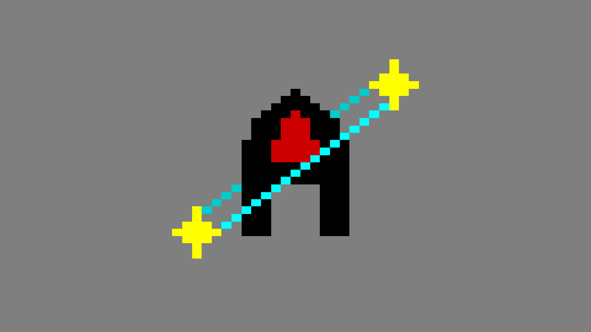
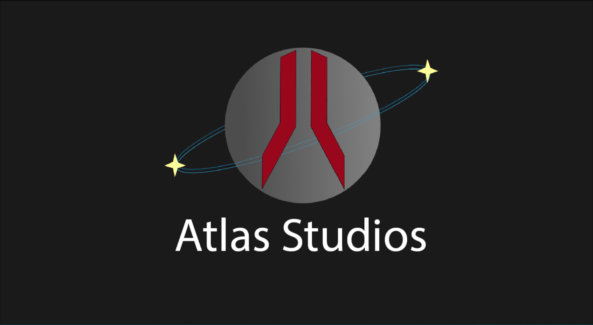
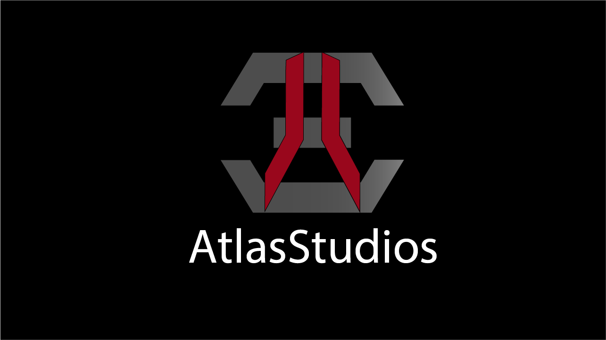
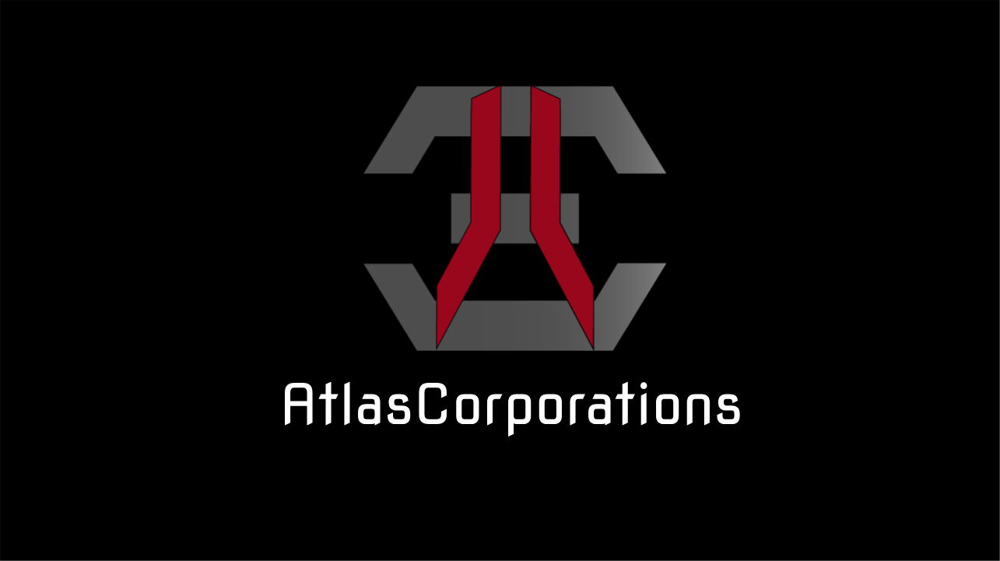

About

"We are the Creators of the Future!" - Brendan Beard
AtlasCorporations is committed to creating the future as it says in our motto. We do this by creating video games, online tools and other immersive technology
to help with everyday life, your entertainment, and scientific research.
Our Story:
The idea of AtlasCorporations was founded in 2016 by Brendan Beard.
He started by creating Scratch games and soon moving on to the programming language Python which in turn created the AtlasCorporations you know and love.
Future Locations:
San Angelo, TX
Lubbock, TX
Future Business Executives:
CEO/President: Brendan Beard
Assistant: Katherine Hicks
COO: Russell McNorton
CMO: Jesse Gil
CFO: John Fargnoli
CLO: Taylor Stubblefield
Supporters:
Thanks to all our supporters, all our families, and all our teachers that have supported our company!
We greatly appreciate you! Some very special supporters are...
The Hortons (Teacher/Supporters)
Stephanie Salazar (Teacher)
Lori Matthews (Teacher)
Vincent Mangano (Professor)
Beth Niehues (Professor)
Our Logo Through The Years

Pixel AtlasCorporations Logo: 2016-2017

Planet AtlasCorporations Logo: 2017- Sept. 2018

Vector AtlasStudios Logo: From Sept. 2018 - Jan. 2021

Vector AtlasCorporations Logo: From Jan. 2021 - Jun. 2021
Vector AtlasCorporations Logo (using Audiowave Font): From Jun. 2021